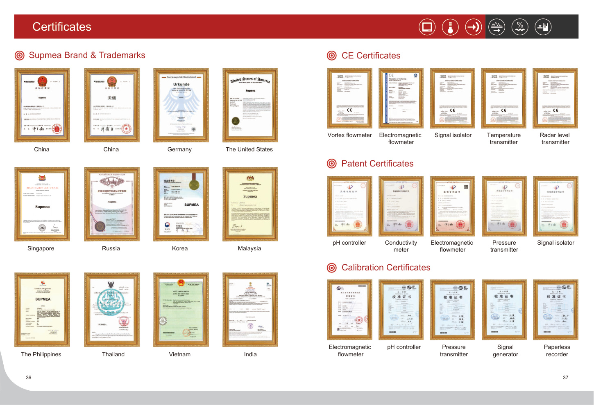

Qingke e-commerce Co., LTD serves international buyers with product information and quotation support for industrial measurement applications.

The supplied catalogue covers level, flow, temperature, signal isolation and pressure-related products. It includes radar and ultrasonic level instruments, electromagnetic/turbine/vortex/ultrasonic flowmeters, temperature sensors and transmitters, and signal isolators.
The supplied manual contains certificates, calibration references, patents and application sections. The live site should host the original verified documents.
Keep actual certificates downloadable by model or product family.
Publish model-level specifications, drawings, wiring and installation data.
Connect product choices to water, environmental, process and manufacturing applications.